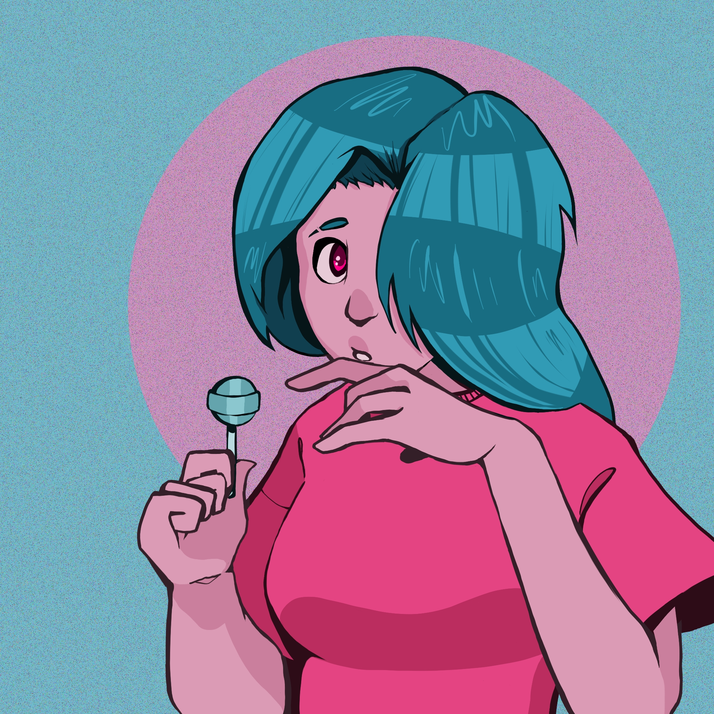

| Home | Programming | Games | Art | Contact Me! |
Though I've always loved drawing, I picked up digital illustration in high school, starting out drawing Minecraft fanart (Listen. I was like fifteen. Give me a break). With time and practice, I've grown to love every aspect of digital illustration. My favorite thing to draw (as you'll be able to see) is torso-up portraits with basic rendering.
I'll add these next time I'm home :P